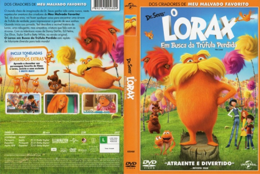

Outro Título:The Lorax
País:United States, 86 minutos
Idiomas falados:Espanhol, Inglês, Português
Gênero(s):Animação, Família
Diretor(s):Chris Renaud
Escritor(es):Ken Daurio, Cinco Paul
Codec:MPEG-2 (DVD)
Número: 5854


Certificado:L
Sinopse:
O menino Ted (Zac Efron) descobriu que o sonho de sua paixão, a bela Audrey (Taylor Swift), é ver uma árvore de verdade, algo em extinção. Disposto a realizar este desejo, ele embarca numa aventura por uma terra desconhecida, cheia de cor, natureza e árvores. É lá que conhece também o simpático e ao mesmo tempo rabugento Lorax (Danny DeVito), uma criatura curiosa preocupada com o futuro de seu próprio mundo.
Elenco:
Tipo de mídia: DVD5,
Legendas: Espanhol, Inglês, Português, Sem Legendas
Alugado: Não
Tela: Anamorphic Widescreen